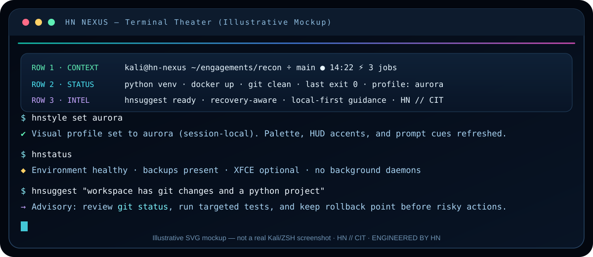
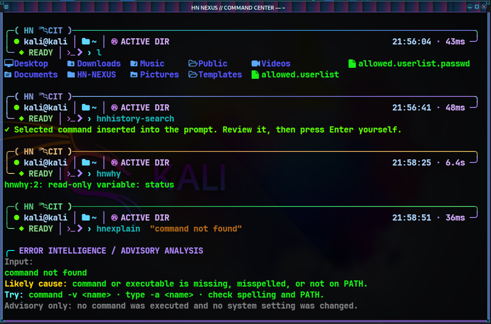
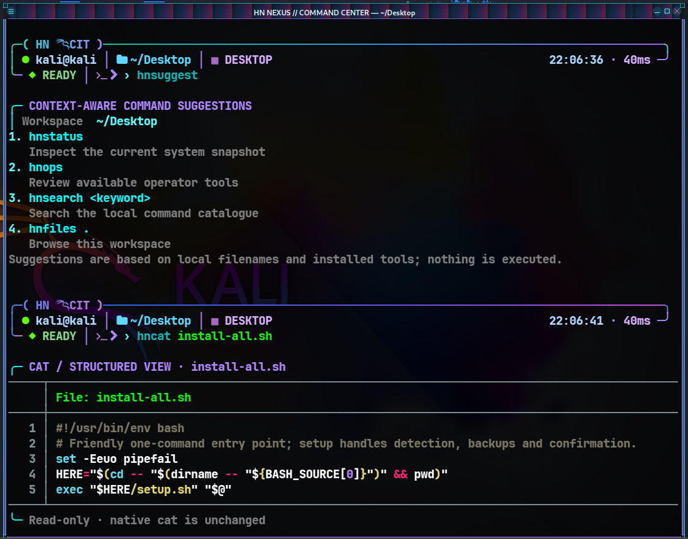

HUD / PROMPT
Three-row responsive HUD
An event-driven ZSH prompt with identity, context, and status rows that adapts to terminal width and session state.

HN NEXUSHN // CIT · CYBER CITADEL AGENCYENGINEERED FOR CONTROL. DESIGNED FOR PRECISION.
A cinematic, context-aware ZSH command environment for Kali Linux — uniting a responsive three-row HUD, Prism visual profiles, on-demand operator utilities, and recovery-aware setup under one elite identity.
Local-first. Explicitly invoked. Transparent in behavior and limitations. Crafted with precision by Hani Khaled Nasser Al-Nasiri.
HN NEXUS enhances the interactive terminal with a responsive HUD, practical utilities, and clear guidance — while preserving native command behavior and keeping every action user-invoked.
An event-driven ZSH prompt with identity, context, and status rows that adapts to terminal width and session state.
Automatic rotation and pinnable profiles via hnstyle, with Nerd Font detection and readable fallbacks.
hnsuggest, hnhistory-search, hnexplain, and hnwhy provide heuristic guidance — never auto-executed.
Inspect files, logs, processes, services, containers, and listening sockets with explicit commands and clear scope.
hnoutput, hnnet, and hnanalyze classify text you provide — no scanning, capture, or connections.
Guided setup, timestamped backups, verification helpers, and rollback paths designed to reduce installation risk.
Every profile below carries the exact rail colors defined in config/hn-terminal.zsh — start, mid, and end RGB values rendered live. Select one to preview it, then apply it in your session with hnstyle.
hnstyle emerald
hnstyle also accepts auto (automatic session cycling). Profiles are session-local — nothing persists unless you pin it. Colors above are generated directly from the runtime definitions.
The complete HN NEXUS catalogue — discovery, diagnostics, advisory helpers, file viewers, operations, and network/output intelligence. Filter by category or search by name and purpose.
hnhelpShow the operator quick reference of available commands and features.
DiscoveryhnmenuInteractive, keyboard-driven command-center launcher for existing utilities.
Discoveryhnsearch [TEXT]Search the built-in local catalogue of native Linux commands and HN/PRISM utilities.
DiscoveryhnstatusCompact system/session snapshot (read-only).
DiagnosticshnprismLive session, Git, and runtime overview.
DiagnosticshndoctorRead-only diagnostics for core files, completion, correction, plugins, optional tools and capabilities.
DiagnosticshnvisualDiagnose Nerd Font detection, glyph readiness, color capability and width.
DiagnosticshncolorsPreview the PRISM/HN color spectrum and truecolor output.
DiagnosticshniconsPreview the supported symbol/icon set and fallbacks.
DiagnosticshnhealthOne-shot system health snapshot (read-only).
Diagnosticshnstyle [PROFILE]Show or set the HUD/prompt visual profile. Default mode is automatic cycling; session-local.
Visualhnsuggest [TEXT]Suggest relevant commands from local workspace markers and installed tools. Advisory only.
Advisoryhnhistory-search [TEXT]Search recent ZSH history and insert a selection into the prompt for review — never auto-runs.
Advisoryhnhistory [COUNT]Read-only, numbered view of recent ZSH history.
Advisoryhnexplain [ERROR]Heuristic, advisory explanations for common error text (args or piped input).
AdvisoryhnwhyExplain the last command exit status ($?) in plain terms.
hnfiles [DIR]Semantic file browser for immediate entries with glyphs and colors.
Fileshnicon PATHIdentify a path by type: file, directory, symlink, executable or category hints.
Fileshncat FILENumbered, framed text viewer with syntax colors via bat/batcat when available.
hnlog FILERead logs with line numbers, severity-aware highlighting and a compact summary.
Fileshnjson FILEPretty-print JSON with syntax colors (uses jq).
hnyaml FILEFormat/view YAML when yq is available.
hnfind TEXT [PATH]Search text with colored matches — rg when available, else grep.
hninspect FILEFile metadata and SHA-256 report for regular files.
Fileshndiff OLD NEWColored unified diff view between two files.
Filescat FILEInteractive presentation wrapper: syntax-aware, numbered view when bat/batcat is installed.
hnopsOperations center: local capability and session overview (read-only).
OperationshnportsRead-only overview of listening TCP/UDP sockets (local; not a scanner).
OperationshnprocTop processes by CPU usage (snapshot).
OperationshnservicesRead-only systemd service inventory/status view (when systemctl is available).
hncontainersRead-only Docker/Podman container inventory (when installed).
Operationshnreport [FILE]Create a local, read-only system/network snapshot report (review before sharing).
Operationsps · df · free · ss · duInteractive native system wrappers: semantic, numbered/color-emphasized presentation in interactive terminals.
Operationshnipa [-4|-6]Compact, color-coded interface/address matrix.
Networkip a · route · neighFamiliar ip command with compact matrices for supported read-only display forms.
hnnet [FILE|-]Passive highlighter/classifier for network-related text you provide (IPs, ports, protocols, firewall terms).
Networkhnanalyze [FILE|-]Heuristic analysis over supplied output — e.g. Nmap text, SSH auth logs, DNS/HTTP traces.
Outputhnoutput [FILE|-]Smart output triage/classification for saved or piped command output (read-only).
Outputmkcd DIRCreate a directory and enter it.
Utilityextract FILEExtract supported archive formats using available system tools.
Utilityls · treeEnhanced interactive directory views (colors/grouping; tree when installed).
l · ll · la · ltConvenience eza shortcuts — only when eza is installed.
Full usage notes, arguments, and examples: Command Reference · bypass any presentation wrapper with command <name>.
Interactive wrappers enhance readability in the terminal while preserving native behavior for pipes, redirections, and scripting contexts. Bypass anytime with command <name>.

This is a high-quality SVG preview for presentation. Add genuine, privacy-scrubbed Kali screenshots in assets/screenshots/ before presenting them as real environment images.
hnhelp, hnmenu, and hnsearch to find commands and built-in guidance.hnstatus, hnprism, and hnsuggest for local, advisory insights.hncat, hnlog, hnports, hnservices) when needed.hnoutput, hnanalyze, or hnexplain.A visual glimpse of the HN NEXUS command-center experience — premium illustrative SVG mockups and identity art designed for this project (not fabricated real runtime screenshots). Real captures are included from the author's environment.




HN NEXUS is structured to keep the interactive core, HUD, utilities, and recovery concerns understandable, modular, and maintainable.
ZSH entry, hooks, completion, correction, and prompt rendering.
Three-row responsive geometry, palettes, context markers, Git/runtime/status.
Explicit hn* tools, viewers, analyzers, and safe interactive wrappers.
Guided install, backups, rollback scripts, diagnostics, and test coverage.
See Architecture documentation for detailed component responsibilities and boundaries.
HN NEXUS carries a deliberate engineering identity — control, precision, and recovery-aware thinking — expressed through the HN // CIT / Cyber Citadel Agency vision.
Cybersecurity Student — Al-Razi University
Creator of HN NEXUS and the HN // CIT command-center identity under CYBER CITADEL AGENCY. Focused on building a cinematic, transparent, and recovery-aware terminal experience that remains local-first, inspectable, and firmly under user control.
From first install to advanced workflows — detailed, behavior-accurate documentation and publishing guidance, browsable on the site and directly in the repository.
Run from the extracted project directory as a normal user (no sudo). Review scripts first and keep independent backups.
Validate environment without changing files.
./setup.sh --check
See the guided actions before applying.
./setup.sh --dry-run
Install core (and optional XFCE visual on supported X11 sessions).
./setup.sh
Open a new ZSH session and confirm.
hnhelp && hnstatus && hndoctor
Interactive prompts walk you through core setup and offer the optional XFCE visual layer on supported X11 sessions. Skipped safely elsewhere.
./setup.shVerifies prerequisites and reports what would be needed — changes nothing on disk.
./setup.sh --checkPreviews every guided action the installer would take, so you can review the plan before applying it.
./setup.sh --dry-runInstalls the ZSH/HUD core with timestamped backups and recovery artifacts. No desktop styling.
./setup.sh --coreApplies the optional XFCE/X11 desktop visual layer on supported sessions; skipped safely when unsupported or non-interactive.
./setup.sh --visualGuided full pass: core terminal experience plus the optional visual layer where supported, with backups throughout.
./setup.sh --fullGitHub Pages is configured to deploy from Actions and the latest deployments are successful. If https://hhh2006.github.io/HN-NEXUS/ is unavailable on your network/region (some providers may block or delay github.io), try waiting a few minutes, hard-refreshing, another browser/device, or a different network/DNS/VPN. You can always browse full docs in the repository, download the v1.0.0 release, or clone/download and open website/index.html locally for a static preview of this page.
HN NEXUS is built to make the terminal clearer, more expressive, and more recoverable — without surrendering user agency. Explore the source, read the docs, and deploy it on your terms.
ENGINEERED BY HN · Hani Khaled Nasser Al-Nasiri